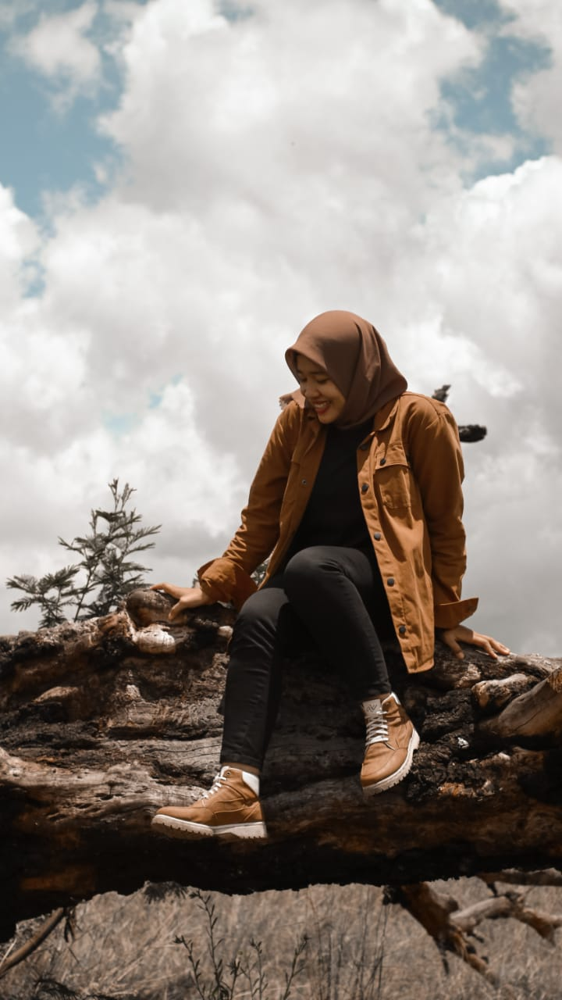

|  | |
| Nama | : Tika Lupiana |
| Tempat, tanggal lahir | : Banyuwangi, 30 Januari 1995 |
| Jenis Kelamin | : Perempuan |
| Agama | : Islam |
| Alamat | : Jl. Mulawarman No. 01 Tamanbaru Banyuwangi |
| Tinggi Badan | : 155 Cm |
| Berat Badan | : 54 Kg |
| Status | : Masih Sendiri |
| No. | Jenjang Pendidikan | Tahun |
|---|---|---|
| 1. | TK Darma Wanita Kedungasri | 1999-2001 |
| 2. | SDN 2 Kedungasri | 2001-2007 |
| 3. | SMPN 2 Tegaldlimo | 2007-2010 |
| 4. | SMK PGRI 1 Giri Banyuwangi | 2010-2013 |
| 5. | STIKOM PGRI Banyuwangi | 2020-Sekarang |
Yups ini adalah pengalaman pertama saya kerja setelah lulus dari SMK, ikut salah satu perusahaan yang bergerak di bidang Event Organizer.
Cukup menyenangkan, karna bisa bertemu dengan banyak orang yang sebelumnya belum pernah kita kenal.
Menjadi admin adalah pengalaman pertama saya di dunia kerja, selain menjadi admin saya juga pernah menjadi Supervisor.
Menjadi seorang pemimpin mempunyai tantangan tersendiri, kita harus menjadi contoh yang baik bagi teman-teman yang lain.
Ngomongin masalah perpajakan, ini juga pengalaman pertama saya di dunia kerja, karna sebelumya belum pernah tau sama sekali.
Ya seperti pengalaman-pengalaman sebelumnya yaitu menjadi Admin, yang jelas banyak bertemu dengan orang baru.
dengan karakteristiknya dan keunikannya masing-masing
Kali ini cukup berbeda dengan pengalaman - pengalaman kerja sebelumnya, saya memilih Resign dari perusahaan yang dulu,
untuk fokus mengembangankan Usaha saya, Untuk freelance sendiri saya lebih fokus ke Perpajakan , kalau Guide sebenernya Hobby,
karna hobby saya traveling, jadi sekalianlah mencari cuan dari sini, sambil menyelam minum air.
| Nomor Telepon (WA) | : 0878 5728 4059 |
| : tikalufiana.com | |
| : tikalufiana | |
| : Tika Lufiana |